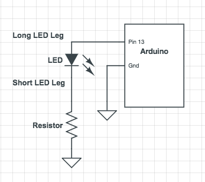
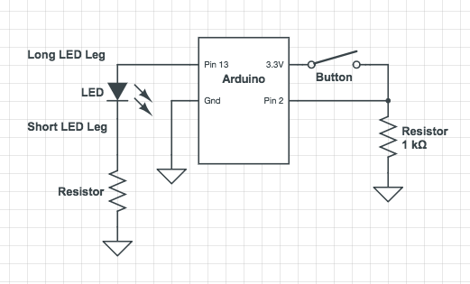
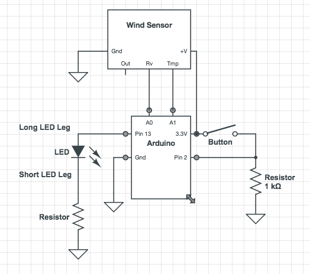
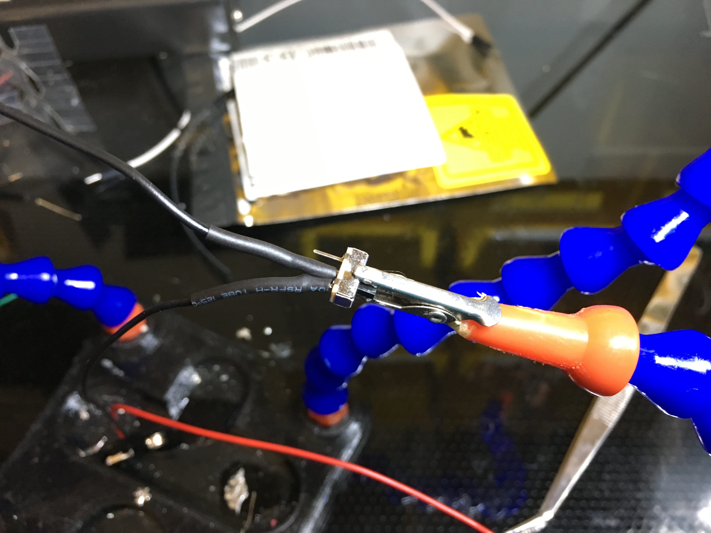
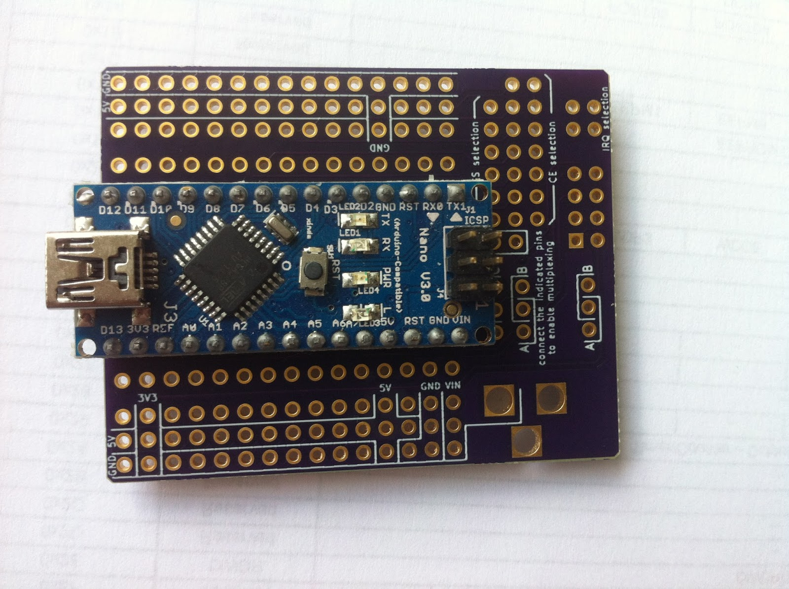

6.810 Engineering Interactive Technologies (fall 2018)
Intro to Electronics
Deliverable (due Sept. 28, 11.59pm)
Upload to gradebook a video showing how you blow the candle on/off.
Your prototype needs to use the battery as a power source (disconnect from your laptop).
It also needs to use the Arduino nano + protoboard (aka: soldered, and not plugged cables with the big breadboard)
work in progress
Goal
We are going to wire up a wind sensor and an LED to create a 'electronic candle' you can blow out.

Here's what we do today:
- solder the sensor together
- wireup sensor and LED using breadboard + microcontroller
- write code to detect sensor input and turn LED on/off using Arduino IDE
- remove power from laptop and instead use a 9V battery
- minutiarize the setup by soldering onto a protoboard
Breadboard
Certain rows and columns of the holes are electrically connected together.
Each column of 5 holes is connected internally. If you insert one end of side of a component into one set of the holes in a column of 5, and then insert one side into a second set of holes across the gap, the pins will not be connected together.
If you were to rip the back off your breadboard (DO NOT DO...we ruined the one in the photo so you don't have to!) you could more clearly see which rows and columns are connected.

The back of a breadboard, revealing the metal connectors inside. Note how there are many short connectors (with five connecting holes), and only several longer connectors, often called "rails" or "busses" and which we'll use for power distribution.
There are good and bad ways to wire a breadboard, just like there are good and bad ways to write code. The general rule is to keep the wires short and sweet...avoid large loops.
When adding components, be careful not to short them! Here we have an LED with both terminals plugged into the same row. They are therefore electrically connected with each other. DO NOT DO THIS!

Instead, plug LEDs and other electrical components along the other access like this:

The long red and blue buses are traditionally used for power and ground. For example, if you were powering your devices with a 9V batter, you could plug it in as so:

Note that you could also switch the two rails with each other, they are only 'wires' themselves, but that would be confusing since they are color-coded.

NEVER EVER EVER short your power and ground!!! (It's okay here because the batter isn't plugged in)

NEVER EVER EVER short your power and ground, even through a wire!!! (It's okay here because the batter isn't plugged in)

Connect Micro-Controller to Breadboard
Make sure nothing is plugged into your breadboard and your arduino is off (not plugged into your computer or any other power source). As a general rule, never play with live wires. Always remove all power sources before plugging and unplugging wires and other devices.
The micro-controller has a 3.3V output (+) and a 0V/GND (-, ground).
Use a jumper wire to connect the 3.3V to the red horizontal rail and another wire to connect the GND to the other horizontal rail.
Even though this might not be necessary, it will make it easier to wire things up later.
Connect your LED
Before you can connect your LED, you also need a resistor.
The reason for this is that your micro-controller provides 3.3V or 5V, but these LEDs only need about 2V if it is yellow or red and 3V if it is white, green, or blue. Furthermore, they don't want more than 20mA of current (or else they blow up), and contribute only a negligable resistance to the circuit. Therefore, in order to get the current down to 20mA, we'll have to calculate what resistor we will need.
Here's the math for the yellow/red LEDs:
The voltage going through the resistor will be 3.3V - 2V = 1.3V
V=IR
1.3V = 20mA * R
R = 65 Ohms
To be safe, you can use a larger resistor. Probably anything 100 Ohms - 650 Ohms will work fine, though a large resistor will lead to a less bright LED since there will be less current.
To find the right resistor, you do the following:
Either use one of the color-charts as you see below:

Or you can use a Resistor Color Code Calculate website that gives you the right resistor:
https://www.allaboutcircuits.com/tools/resistor-color-code-calculator/
Now that you have your LED and the resistor, you can wire up your LED.
Use the following wiring diagram.
Note that an LED can only be plugged in one way! The longer leg must be connected to the higher voltage. On the other hand, the resistor can be plugged in facing either way and on either side of the LED.


If you don't know how to read the top diagram, ask a TA to help you better understand them, you will need this again further along in the tutorial (and in the future for your project).
So long as everything was done correctly, you should be able to run the same program as you did in the homework to make it blink!
Add Button to your LED to turn it on/off
Next, add a button to your LED using this wiring chart.

Write Arduino Code to turn LED on/off
Now, let's write our own code. To turn the LED on and off with the button!
The Arduino has a setup() function that is called exactly once on start.
The loop() function runs repeatedly until you shut the micro-controller off.
Before either of these functions, you can declare variables.
Your LED is wired on Pin 13 and button is wired to pin 2. Declare this at the top of your code by adding the following lines of code at the top.
const int buttonPin = 2;
const int ledPin = 13;
We also will declare a variable that will keep track of the button state, whether it is pressed or not.
int buttonState = 0;
In the setup function, we declare whether the pins are inputs or outputs.
pinMode(ledPin, OUTPUT);
pinMode(buttonPin, INPUT);
Lastly in the loop function we conditionally turn the LED on or off depending on whether the button is pressed.
if (buttonState == HIGH) {
// turn LED on:
digitalWrite(ledPin, HIGH);
}
else {
// turn LED off:
digitalWrite(ledPin, LOW);
}
Solder your wind sensor
The wind sensor doesn't come with legs (aka: header pins) to plug it into the breadboard, so we need to solder some on it.
Grab a soldering iron and some solder thread and ask a TA to show you how to do it if you have never done it before.


Connect your wind sensor to the board
Once you have the header pins soldered on, connect the windsensor to your circuit using the following wiring diagram.

How does the wind sensor actually work?
Our wind sensor is actually what is called a “hot-wire” wind detector.
A wire warmed up by a little electricity will cool when air blows across it.
When the wire cools, its conductivity changes.
The other electronics on the board detect this change and turn it into values the Arduino can read.
Add code for detecting blowing air onto the sensor
Download the code for the wind sensor here. Make sure you understand how it works. There are several conversions that are done in the loop. You do not need to understand the details of how those work.
If the light keeps going out or it fails to go out, you might need to calibrate the wind speed threshold. Look at the line that says if (WindSpeed_MPH > 20) and change the 20 to be bigger or smaller as necessary.
Once you run this, you should be able to blow the LED off and use the button to turn it back on.
Replace laptop power via USB cable with a 9V battery
Next, we want to free our setup from our laptop.
Once the code is uploaded on the Arduino, it constantly keeps running, so there is no need for the laptop.
The only reason we are still using the laptop is because it's supplying the energy to the micro-controller.
However, we can replace the power supply using a battery and battery connector.
Using the switch on the battery is important because even when the candle is out, your Arduino is still running. So remember to power it down completely with the switch (or by unplugging the battery) or you’ll run out of juice very soon.
Let's solder a switch to our batter pack wires. Remember not to have the battery plugged in while we do this!
Before soldering the wire to the switch, put a bit of heat shrink on! This will protect the exposed wires.


After soldering both the battery wire and an additional wire to the switch (make sure that at least one wire is soldered to the middle pin!), you can shrink the heat shrink using a heat gun. Ask a TA if you do not know how to use one.
before

after

Finally, to avoid accidentally shorting your battery, you can cut off the third pin, as it is not necessary for our purpose.

Now just plug in your battery power into the Arduino Vin and the ground into Gnd, and it should work without laptop power!
Minituarizing your setup
The breadboard and Arduino Uno are pretty chunky and will by hard to integrate into a physical prototype.
We can make everything much smaller by using an Arduino Nano and a protoboard.
However, for this, we need to solder again!

Transfer your design and ask a TA if you have any questions!
Create a new housing (optional)
If you are up for it, you could also 3D print a new housing for your candle.